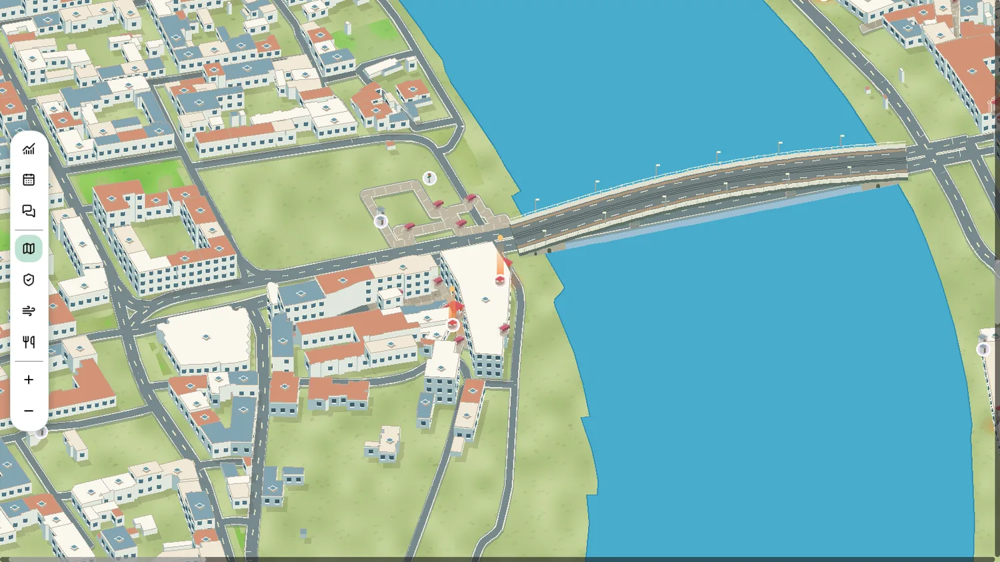
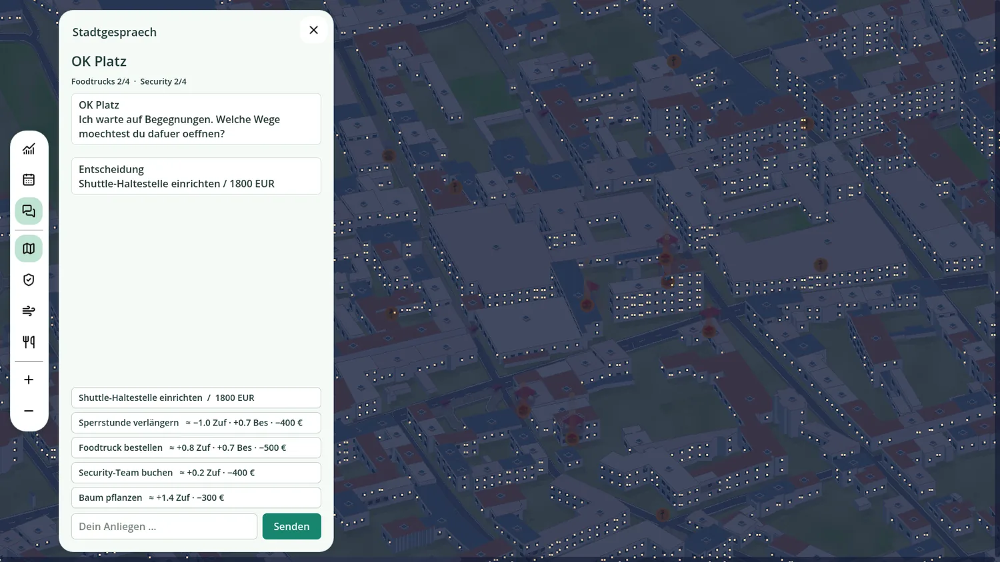
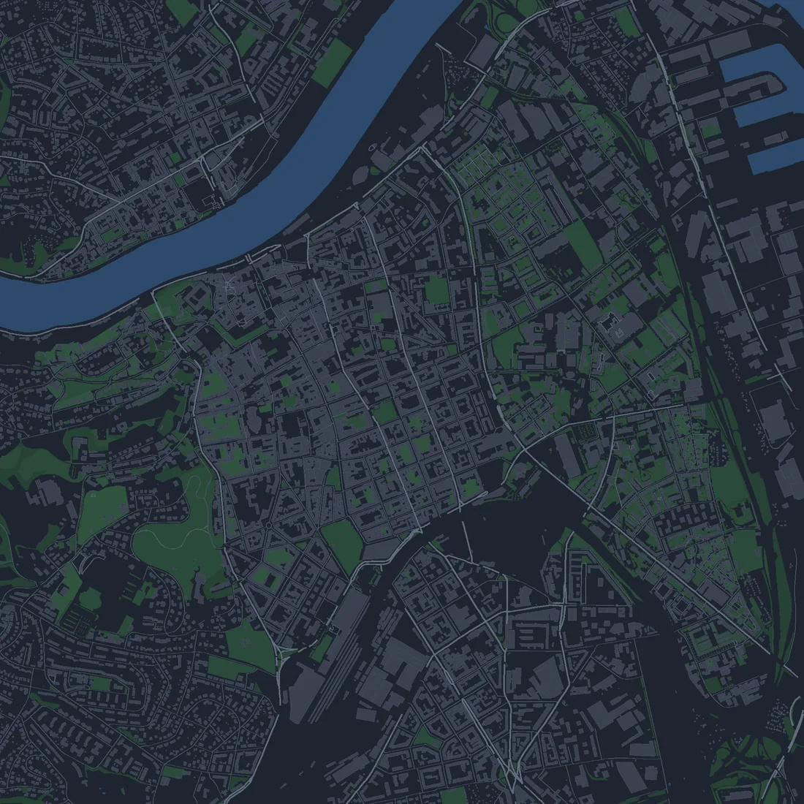
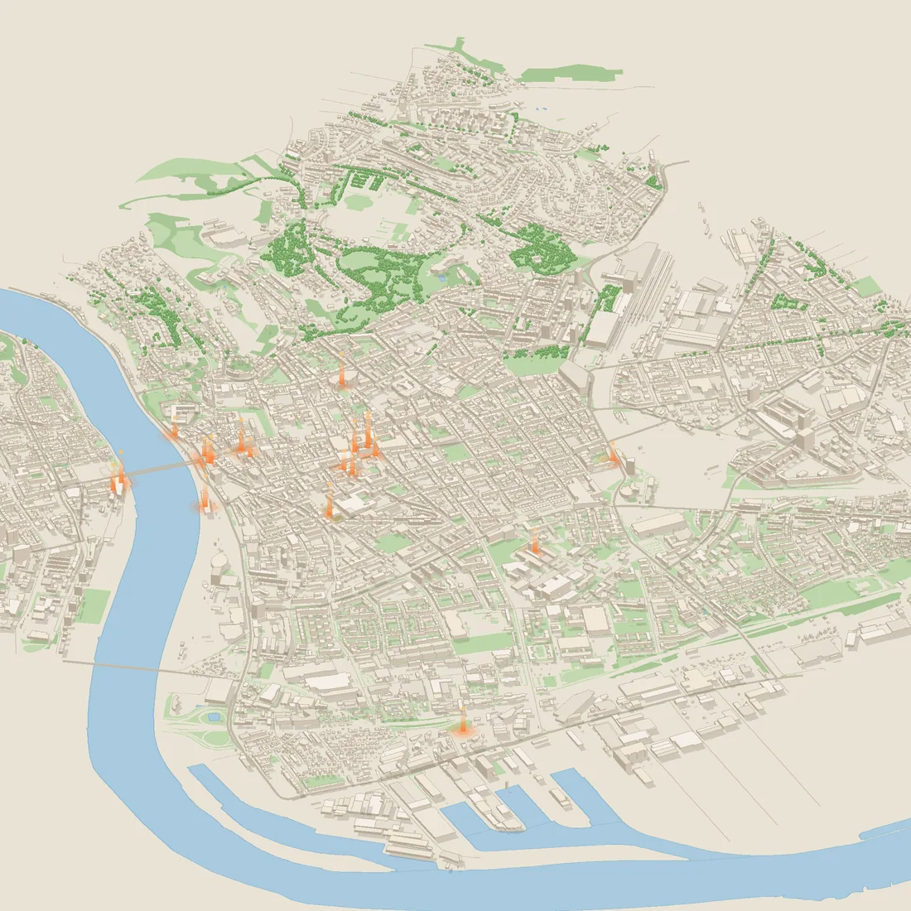
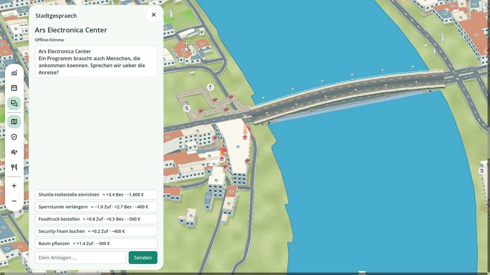
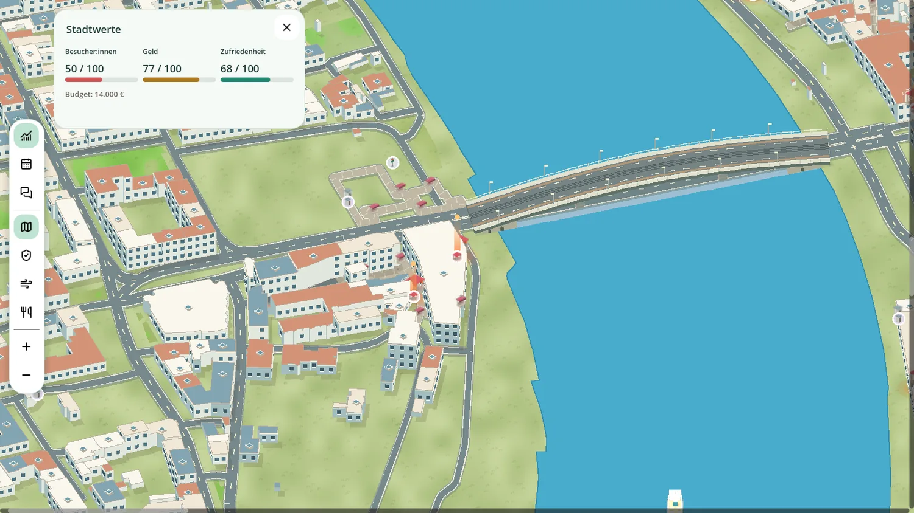
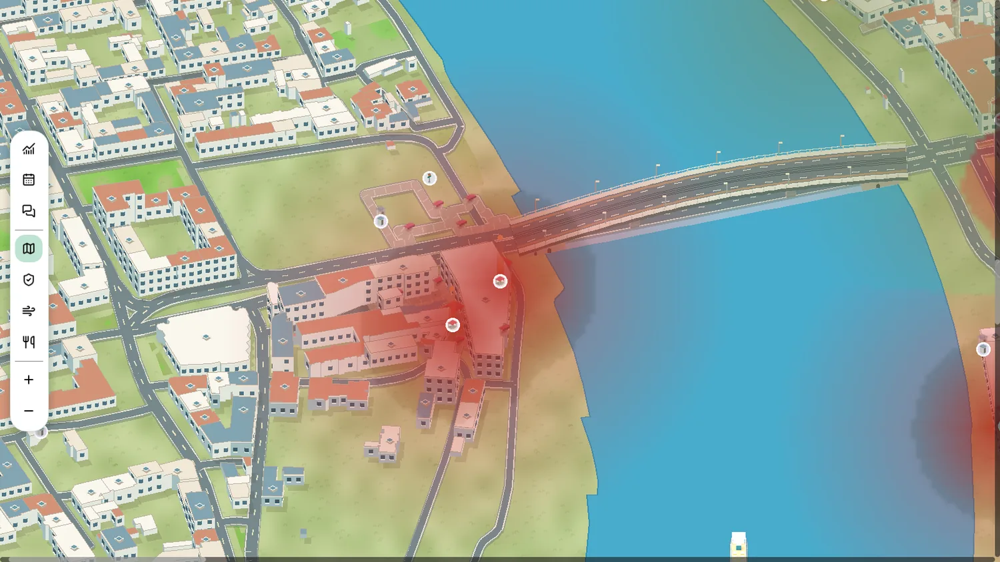
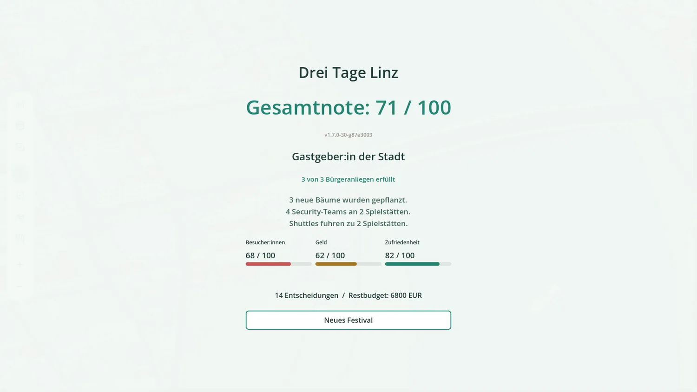

AI Hackathon 2026 · Linz
Three days. One city. Many voices.
Ayan Muhammed · David Frühwirt · Laurenz Pühringer
→ next

The idea
Other apps tell you where to go. We hand you the city everyone arrives in.
Real data


City of Linz open data · Ars Electronica 2026 · Upper Austria air quality (S184 Stadtpark) · OpenStreetMap
The city talks

Three meters
A shuttle brings guests and costs budget. One toilet fewer saves money and upsets the city.


Day 2
Red means an incident. Two teams for €800 — and the night stays calm.
After three days
No highscore — a title, and the story of what you did: which tree stayed, who got a shuttle, which request you answered.

Built
Thanks
Data: City of Linz (CC BY 4.0) · Map: © OpenStreetMap contributors (ODbL)